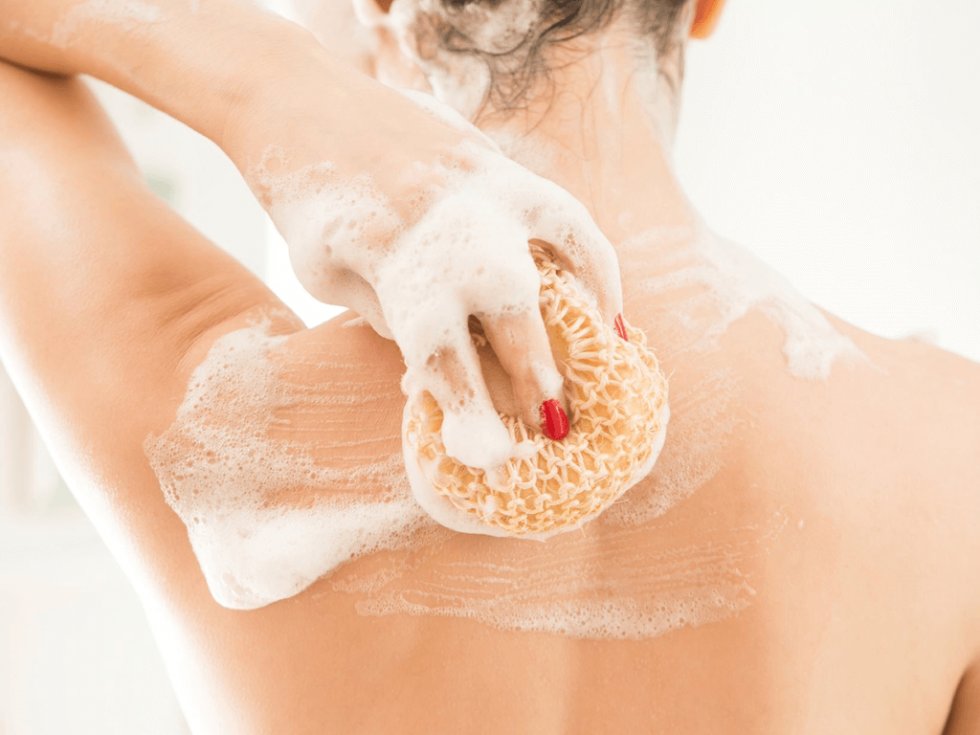
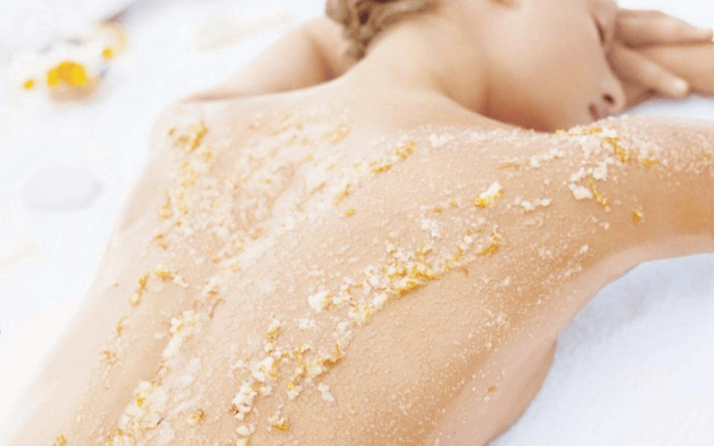

4 BƯỚC CHĂM SÓC DA CHUẨN GIÚP LÀN DA KHỎE- ĐẸP Bước 1: Làm sạch  − Điều chỉnh nước tắm ở mức độ ấm (khoảng 30 – 40 độ). Tắm bằng nước ấm giúp làn da bạn mềm hơn, lỗ chân lông nở ra giúp việc loại sạch chất bẩn cũng từ đó mà dễ dàng hơn − Trong khi tắm nên kết hợp massage theo hình xoáy cho da thêm căng và thư giãn. − Sử dụng bông tắm thay vì dùng tay để gia tăng hiệu quả làm sạch, tránh kỳ mạnh. − Chỉ tắm trong khoảng 20 phút, khi tắm cần thả lỏng cơ thể và thư giãn tối đa. Bước 2: Loại bỏ tế bào chết  Loại bỏ tế bào chết body giúp làn da của bạn trở nên trắng và đều màu hơn đồng thời hỗ trợ bạn trị mụn lưng một cách hiệu quả. Và chỉ nên tẩy tế bào chết toàn thân 2 lần/tuần, tránh thực hiện thường xuyên bởi nếu không nó sẽ tăng nguy cơ tổn hại đến da. Nên chọn những sản phẩm tẩy tế bào chết cho body có chứa AHA (Axit alpha hydroxy) nồng độ 10% hoặc BHA và độ pH trên da ở mức 3-4. Trong quá trình sản sinh tế bào mới, da chết sẽ luôn liên tục được đào thải. Thành phần AHA thấm sâu, làm đứt gãy liên kết của da chết trên bề mặt biểu bì, kể cả các vết thâm nám, vùng da sậm màu, khiến chúng bị loại bỏ, giúp da trắng sáng, láng mịn dần lên. Thành phần BHA giúp loại bỏ tình trạng bề mặt da sần sùi, tăng cường độ đàn hồi và trắng hồng cho da. Bước 3: Chăm sóc da body với kem dưỡng ẩm toàn thân Sau khi làn da đã được làm sạch là khoảng thời gian lý tưởng để các bạn tiến hành chăm sóc và dưỡng da. Bạn nên sử dụng kết hợp kem dưỡng ẩm toàn thân cùng với kem dưỡng trắng da body để phát huy tác dụng dưỡng trắng và cân bằng độ ẩm cho làn da. Lưu ý đừng chỉ thoa lên da mà hãy massage nhẹ nhàng để kem được thẩm thấu vào sâu bên trong Bước 4: Sử dụng kem chống nắng toàn thân Đúng rồi, đây là bước không thể không nhắc đến. Để chăm sóc da body đạt hiệu quả cao bạn cần bảo vệ làn da của mình tránh sự xâm hại của ánh nắng. Chính vì thế, luôn luôn phải bôi kem chống nắng toàn thân bất kể trời nắng hay râm mát, bất kể bạn ra ngoài hay làm việc trong phòng. Chọn kem chống nắng cho body có chỉ số SPF từ 30 trở lên. Nên thoa kem chống nắng lên da trước khi ra ngoài khoảng 15-20 phút để kem thấm vào da bạn nhé.